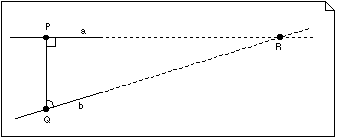
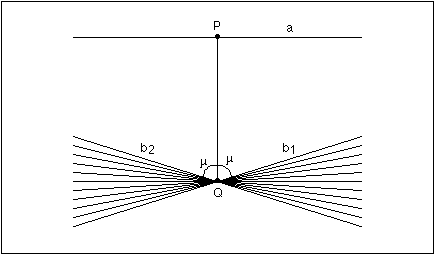
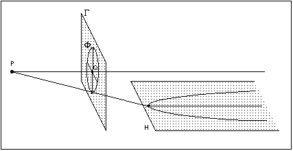
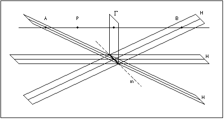

Nineteenth Century Geometry
In the nineteenth century, geometry, like most academic disciplines, went through a period of growth verging on cataclysm. During this period, the content of geometry and its internal diversity increased almost beyond recognition; the axiomatic method, vaunted since antiquity by the admirers of geometry, finally attained true logical sufficiency, and the ground was laid for replacing, in the description of physical phenomena, the standard geometry of Euclid by Riemann's wonderfully pliable system. Modern philosophers of all tendencies — Descartes and Hobbes, Spinoza and Locke, Hume and Kant — had regarded Euclidean geometry as a paradigm of epistemic certainty. The sudden shrinking of Euclidean geometry to a subspecies of the vast family of mathematical theories of space shattered some illusions and prompted important changes in the philosophical conception of human knowledge. Thus, for instance, after these nineteenth-century developments, philosophers who dream of a completely certain knowledge of right and wrong secured by logical inference from self-evident principles can no longer propose Euclidean geometry as an instance in which a similar goal has proved attainable. The present article reviews the aspects of nineteenth century geometry that are of major interest for philosophy and hints in passing, at their philosophical significance.
- 1. Lobachevskian geometry
- 2. Projective geometry
- 3. Klein's Erlangen program
- 4. Axiomatics perfected
- 5. The differential geometry of Riemann
- 6. Lie Groups
- Bibliography
- Academic Tools
- Other Internet Resources
- Related Entries
1. Lobachevskian geometry
Euclid (fl. 300 BCE) placed at the head of his Elements a series of ‘definitions’ (e.g., “A point is that which has no part”) and ‘common notions’ (e.g., “If equals be added to equals, the sums are equal”), and five ‘requests’. Supposedly these items conveyed all of the information needed for inferring the theorems and solving the problems of geometry, but as a matter of fact they do not. However, the requests (aitemata)—usually called ‘postulates’ in English—must at any rate be granted or Euclid's proofs will not go through. Some of them are plainly practical:
1. To draw a straight line from any point to any point. 3. To draw a circle with any center and any radius.
However, the fifth one sounds more like a statement of fact. Euclid's text can be rendered in English as follows: “If a straight line [c] falling on two straight lines [a and b] makes the interior angles on the same side less than two right angles, the two straight lines [a and b], if produced indefinitely, meet on that side on which are the angles less than the two right angles” (terms in brackets added for clarity). This sounds far-fetched. Still, it can be readily paraphrased as a recipe for constructing triangles, (See Figure 1.) Every triangle is formed by three coplanar straight lines that meet, by pairs, at three points. Given any segment PQ, draw a straight line a through P and a straight line b through Q, so that a and b lie on the same plane; verify that the angles that a and b make with PQ on one of the two sides of PQ add up to less than two right angles; if this condition is satisfied, it should be granted that a and b meet at a point R on that same side of PQ, thus forming the triangle PQR. This request is known as “Euclid's Postulate”. If the request is rejected—say, because we believe that the world is finite and there is no room in it to accommodate vertex R if the interior angles in question add up to very little less than two right angles—then much of Euclid's system of geometry will not go through.
Figure 1

In the darker ages that followed, Euclid's sense of mathematical freedom was lost and philosophers and mathematicians expected geometry to rest on self-evident grounds. Now, if a is perpendicular and b is almost perpendicular to PQ, a and b approach each other very slowly on one side of PQ and it is not self-evident that they must eventually meet somewhere on that side. After all, the hyperbole indefinitely approaches its asymptotes and yet, demonstrably, never meets them. Through the centuries, several authors demanded—and attempted—a proof of Euclid's Postulate. John Wallis (b. 1616, d. 1703) derived it from the assumption that there are polygons of different sizes that have the same shape. But then this assumption needs proof in turn. Girolamo Saccheri (b. 1667, d. 1733) tried reductio. He inferred a long series of propositions from the negation of Euclid's Postulate, until he reached one which he pronounced “repugnant to the nature of the straight line”. But Saccheri's understanding of this “nature” was rooted in Euclidean geometry and his conclusion begged the question.
In the 1820's, Nikolai I. Lobachevsky (b. 1793, d. 1856) and Janos Bolyai (b. 1802, d. 1860) independently tackled this question in a radically new way. Lobachevsky built on the negation of Euclid's Postulate an alternative system of geometry, which he dubbed “imaginary” and tried inconclusively to test for validity at the astronomical scale by calculating the sum of the internal angles of triangles formed by stars on the sky. Bolyai excised the postulate from Euclid's system; the remaining rump is the “absolute geometry”, which can be further specified by adding to it either Euclid's Postulate or its negation. From the 1790's Carl Friedrich Gauss (b. 1777, d. 1855) had been working on the subject in the same direction, but he refrained from publishing for fear of scandal. Since Lobachevsky was the first to publish, the system of geometry based on the said “absolute geometry” plus the negation of Euclid's Postulate is properly called Lobachevskian geometry.
The construction introduced above to explain Euclid's Postulate can also be used for elucidating its negation. Draw the straight line a through point P at right angles with the segment PQ. If Euclid's Postulate is denied, there are countless straight lines through Q, coplanar with a, that make acute angles with PQ but never meet a. Consider the set of real numbers which are the magnitudes of these acute angles. Let the greatest lower bound of this set be μ. Evidently, μ > 0. There are exactly two straight lines through Q, coplanar with a, that make an angle of size μ with PQ. (See Figure 2.) Call them b1 and b2. Neither b1 nor b2 meets a, but a meets every line through Q that is coplanar with a and makes with PQ an angle less than μ. Gauss, Lobachevsky and Bolyai—unbeknownst to each other—coincided in calling b1 and b2 the parallels to a through Q. μ is called the angle of parallellism for segment PQ. Its size depends on the length of PQ, and decreases as the latter increases.
Figure 2

Suppose that the angle of parallellism for PQ is one half a right angle. In this case, b1 and b2 make a right angle at Q and we thus have two mutually perpendicular straight lines on the same plane as a, which fail to meet a.
Lobachevsky's geometry abounds in surprising theorems (many of which had already been found by Saccheri). Here are a few: The three interior angles of a triangle add up to less than two right angles. The difference or “defect” is proportional to the triangle's area. Hence, in Lobachevskian geometry, similar triangles are congruent. Moreover, if a triangle is divided into smaller triangles, the defect of the whole equals the sum of the defects of the parts. Since the defect cannot be greater than two right angles, the area of triangles has a finite maximum. If a quadrilateral, by construction, has three right angles, the fourth angle is necessarily acute. Thus, in Lobachevskian geometry there are no rectangles.
There is a simple formal correspondence between the equations of Lobachevskian trigonometry and those of standard spherical trigonometry. Based on it, Lobachevsky argued that any contradiction arising in his geometry would inevitably be matched by a contradiction in Euclidean geometry. This appears to be the earliest example of a purported proof of relative consistency, by which a theory is shown to be consistent lest another theory — whose consistency is typically taken for granted — be inconsistent.
Lobachevskian geometry received little attention before the late 1860s. When philosophers finally took notice of it, their opinions were divided. Some regarded it as a formal exercise in logical deduction, with no physical or philosophical significance, which employed ordinary words—such as ‘straight’ and ‘plane’—with a covertly changed meaning. Others welcomed it as sufficient proof that, contrary to the influential thesis of Kant, Euclidean geometry does not convey any prerequisites of human experience and that the geometrical structure of physical space is open to experimental inquiry. Still others agreed that Non-Euclidean geometries were legitimate alternatives, but pointed out that the design and interpretation of physical experiments generally presupposes a definite geometry and that this role has been preempted by Euclid's system.
No matter what philosophers might say, for mathematicians Lobachevskian geometry would probably have been no more than an odd curiosity, if a niche had not been found for it within both projective and differential geometry, the two main currents of nineteenth-century geometrical research (§§ 2 and 5).
2. Projective geometry
Today projective geometry does not play a big role in mathematics, but in the late nineteenth century it came to be synonymous with modern geometry. Projective methods had been employed by Desargues (b. 1591, d. 1661) and Pascal (b. 1623, d. 1662), but were later eclipsed by Descartes's method of coordinates. They prospered, however, after Jean-Victor Poncelet (b. 1788, d. 1867) showed that the projective properties of figures furnished grounds of proof that were at least as powerful as, and certainly more intuitive and ostensibly compelling than the Cartesian procedure of setting up and solving equations between numbers representing points.
Projective properties are those preserved by projections. Take, for example, two planes Γ and H and a point P outside them. Let Φ be any figure on Γ. Draw straight lines from P through each point of Φ. The figure formed by the points where these lines meet H is the projection of Φ on H from P. Generally this figure will differ from Φ in size and shape. But the projection of any number of straight lines on Γ meeting each other at certain points generally consists of an equal number of straight lines on H meeting respectively at the projection of those points. What happens, however, if the straight line joining P with some point Q of Γ never meets H, because PQ happens to lie on a plane parallel to H? (See Figure 3.)
Figure 3

To obviate such irksome exceptions, projective geometry added to each straight line in space an ideal point, shared by every line parallel to it. Continuity requires then that all ideal points lie on a single ideal plane, which meets each family of parallel planes along a different ideal line. Fundamentalists may shudder at this seemingly wanton multiplication of entities. However, it had been practised in arithmetic for centuries, as the initial stock of natural numbers 1, 2, 3, … , was supplemented with zero, the negative integers, the non-integral rationals, the irrationals, and the so-called imaginary numbers.
The points of a straight line stand in mutual relations of neighborhood and order. To see how the ideal point fits into these relations let H rotate continually about the straight line m where it intersects Γ. (See Figure 4.) When H is parallel to PQ—say, at time t—the projection of Q on H from P is the ideal point of the straight line through P and Q. Right before t the said projection is an ordinary point of H, very far from m. Right after t the projection is again an ordinary point of H, very far from m, but at the opposite end of the plane. Studying the continuous displacement of the projection during a short time interval surrounding t, one concludes that if A and B are any two points of H that stand, respectively, on either side of m, the ideal point of the straight line through A and B must be placed between A and B. Thus, in projective geometry, the points of a straight line are ordered cyclically, i.e., like the points of a circle. As a result of this, the neighborhood relations among points in projective space and on projective planes differ drastically from those familiar from standard geometry, and are highly counterintuitive. It is fair to say that projective geometry signified a much deeper and far-reaching revolution in human thought than did the mere denial of Euclid's Postulate.
Figure 4

In the new setting, the projective properties of figures can be defined unexceptionably. a one-one mapping f of projective space onto itself is a collineation if it sends any three collinear points A, B, and C, to three points (A), (B), and (C), which are collinear too. Projective properties (and relations) are those which are preserved by collineations. Here are a few examples of projective properties. Of three or more points: to lie on the same straight line; to lie on the same plane. Of three or more straight lines: to meet at the same point; to lie on the same plane. Of three or more planes: to intersect along the same straight line; to share the same point. Of curves: to be a conic. Of surfaces: to be a quadric.
3. Klein's Erlangen program
In a booklet issued when he joined the faculty at Erlangen (1872), Felix Klein (b. 1849, d. 1925) took stock of the enormous growth and diversification of geometry and proposed a standpoint from which its many branches could be organized into a system. From this standpoint, the task of a branch of geometry can be stated thus:
Given a manifold and a group of transformations of the manifold, to study the manifold configurations with respect to those features which are not altered by the transformations of the group. (Klein 1893, p. 67)
In nineteenth-century mathematics, ‘manifold’ often designated what we now call a set, but Klein apparently had something more specific in mind:
If n variables x1, … , xn are given, the … value systems we obtain if we let the variables x independently take the real values from −∞ to +∞ constitute what we shall call … a manifold of n dimensions. Each particular value system (x1, … ,xn) is called an element of the manifold. (Klein 1873, p. 116)
If S is a manifold in either sense, by a transformation of S we mean a one-one mapping of S onto itself. It is clear that
- If T1 and T2 are transformations of S, the composite mapping T2 ○ T1, which consists of T1 followed by T2, is also a transformation of S;
- the composition of transformations is associative, so that, if T1, T2 and T3 are transformations of S, (T3 ○ T2) ○ T1 = T3 ○ (T2 ○ T1);
- the identity mapping I that sends each point of S to itself is a transformation of S such that, for any transformation T, T ○ I = I ○ T = T;
- for every transformation T there is a transformation T−1, the inverse of T, such that T−1 ○ T = I (T−1 sends each point of S back to where it was brought from by T).
By virtue of conditions (i)-(iv), the transformations of S form a group GS in the precise sense that this term has in algebra. GS includes subgroups, i.e., subsets which contain I and satisfy conditions (i) and (iv). If H is a subgroup of GS and Φ is a feature of S, or of its elements or parts, which is not affected by the transformations of Φ, we say that Φ is H-invariant. The only GS-invariant is the cardinality of S (i.e., the number of elements in the manifold). On the other hand, the group {I}, consisting of the identity alone, trivially preserves every conceivable feature. Between these two extremes there can be many different subgroups with all sorts of interesting invariants, depending on the respective group structure. If S is not an arbitrary (structureless) set, but a numerical manifold as described by Klein, it inherits structure from the real number field, which contributes to characterize the different subgroups of GS and their invariants. Thus, the group of continuous transformations preserves the topological properties (neighborhood relations), and the group of linear transformations preserves the projective properties.
Can metric properties be fixed in this way? Traditionally one defines the distance between two points (x1, … ,xn) and (y1, … ,yn) of a numerical manifold as the positive square root of (x1 − y1) 2 + … + (xn − y n)2. The group of isometries consists of the transformations that preserve this function. However, this is just a convention, adopted to ensure that the geometry is Euclidean. Using projective geometry, Klein thought of something better. No real-valued function of point pairs, defined on all projective space, is an invariant of the projective group, but there is a function of collinear point quadruples, called the cross-ratio, which is such an invariant. Drawing on work by Arthur Cayley (b. 1821, d. 1895), Klein (1871, 1873) considered the cross-ratio of point quadruples <P1,P2,P3,P4>. such that P3 and P4 belong to a given conic κ on a projective plane, while P1 and P2 range over a region R that is bounded by or otherwise fixed by κ. Since P3 and P4 must be the points where the straight line through P1 and P2 meets κ, the said cross-ratio may be regarded as a function of the point pair <P1,P2>. The collineations that map a given conic onto itself form a group, and the said function is clearly an invariant of this group. Klein showed that a certain function of this function behaves like an ordinary distance function on R. According to the nature of the conic κ, the structure determined by this function satisfies either (i) all the theorems of Euclidian plane geometry, or (ii) all those of Lobachevskian plane geometry, or (iii) those of a third geometry which Klein himself discovered and dubbed ‘elliptic’. (In elliptic geometry every straight line meets every other, and the three internal angles of a triangle always add up to more than two right angles. Klein's names for the geometries of Euclid and Lobachevsky were ‘parabolic’ and ‘hyperbolic’, respectively.)
This is how Klein's approach works for Lobachevskian geometry on the plane. Let κ be a real conic—a conic comprising only real points—on the projective plane. Let Gκ be the set of all collineations that map κ onto itself. Gκ is a subgroup of the projective group. Consider now the cross-ratio of point quadruples <P1,P2,P3,P4> such that P3 and P4 belong to κ, while P1 and P2 range over the interior Int(κ) of the region of the real plane bounded by κ. (P ∈ Int(κ) if and only if P is a real point and no real tangent to κ passes through P.) As noted above, the choice of points P1 and P2 fixes P3 and P4, so the said cross-ratio may be regarded as a function of the first pair of points only, say, fκ(P1,P2). The function fκ is clearly Gκ-invariant. Put dκ(P1,P2) = c log fκ(P1,P2), where c is an arbitrary real-valued constant, different from 0, and log x denotes the principal value of the natural logarithm of x. Klein was able to show that dκ behaves precisely like a Lobachevskian distance function on Int(κ). In other words, every theorem of Lobachevskian geometry holds for suitable figures formed from points of Int(κ), if the distance between any two of these points is given by the function dκ. Consider, for instance, four points P1,P2,P3, and P4 in Int(κ), such that dκ(P1,P2) = dκ(P2,P3) = dκ(P3,P4) = dκ(P4,P1). They are the vertices of a Lobachevskian equilateral quadrilateral Q, which can have at most three right angles, in which case the fourth interior angle of Q must be acute. (Where ‘right angle’ means, as usual, an angle equal to its adjacent angle, and two angles in Int(κ) are said to be equal if one is the image of the other by a transformation of group Gκ).
If κ stands for a different sort of conic, not an ordinary real one, the function dκ obtained by the above procedure behaves on suitably defined regions of the projective plane like a Euclidian distance function or like the distance function of elliptic geometry (this depends on the nature of the conic κ). Thus, depending on whether κ belongs to one or the other of three kinds of conic, the group of collineations that map κ onto itself is structurally identical with one of the three groups of Lobachevskian, Euclidean, or elliptic isometries. Similar results hold for the three-dimensional case, with κ a quadric surface.
Klein's result led Bertrand Russell (b. 1873, d. 1970) to assert, in his neo-Kantian book on the foundations of geometry (1897), that the general “form of externality” is disclosed to us a priori in projective geometry, but its metric structure—which can only be Lobachevskian, Euclidean or elliptic—must be determined a posteriori by experiment. Henri Poincaré (b. 1854, d. 1912) took a more radical stance: If geometry is nothing but the study of a group,
one may say that the truth of the geometry of Euclid is not incompatible with the truth of the geometry of Lobachevsky, for the existence of a group is not incompatible with that of another group. (Poincaré 1887, p. 290)
The application to physics is immediate: “Among all possible groups we have chosen one in particular, in order to refer to it all physical phenomena, just as we choose three coordinate axes in order to refer to them a geometrical figure” (ibid., p. 291). The choice of this particular group is motivated by its mathematical simplicity, but also by the fact that “there exist in nature some remarkable bodies which are called solids, and experience tells us that the different possible movements of these bodies are related to one another much in the same way as the different operations of the chosen group” (ibid.). These remarks of Poincaré signalled the beginning of conventionalism in the philosophy of science and provided its initial motivation.
Klein's group-theoretical view of geometry enjoyed much favor among mathematicians and philosophers. It achieved a major success when Minkowski (1909) showed that the gist of Einstein's special theory of relativity was the (spacetime) geometry of the Lorentz group, an essential result that Klein (1911) lived to enjoy. It implies that the recent debate on the priority of Minkowski chronogeometry over Lorentz invariance or vice-versa is utterly idle, for these are logically equivalent and thus, in effect, two sides of the same coin (as explained by Acuña (2016)). However, Klein's Erlangen program failed to cover the differential geometry of Riemann (§5), which Einstein (1915, 1916) placed at the core of his general theory of relativity.
4. Axiomatics perfected
According to Aristotle, scientific knowledge (episteme) must be expressed in statements that follow deductively from a finite list of self-evident statements (axioms) and only employ terms defined from a finite list of self-understood terms (primitives). For over two millennia it was generally assumed that Aristotle's ideal is actually realized in Euclid's Elements. As a matter of fact, there is a logical gap already in Euclid I.1 (the solution of this problem rests on an unstated assumption of continuity) and it is not clear that Euclid regarded his postulates as self-evident (by calling them ‘requests’ he suggested he did not). The idea of securing knowledge by logical deduction from unquestionable principles had a powerful fascination for modern scientists such as Galileo and Newton, both of whom fondly practised axiomatics, at any rate as a literary form, like Spinoza in his Ethics. Still, a truly satisfactory and, if one may say so, serious instance of axiomatization of a branch of knowledge was not available in print until 1882, when Moritz Pasch (b. 1843, d. 1930) published his Lectures on Modern Geometry.
Pasch viewed geometry as a natural science, whose successful utilization by other sciences and in practical life rests “exclusively on the fact that geometrical concepts originally agreed exactly with empirical objects” (Pasch 1882, p. iii). Geometry distinguishes itself from other natural sciences because it obtains only very few concepts and laws directly from experience, and aims at obtaining from them the laws of more complex phenomena by purely deductive means. The empirical foundation of geometry was encapsulated by Pasch in a core of basic concepts and basic statements or axioms. The basic concepts refer to the shape and size of bodies and their positions relative to one another. They are not defined, for no definition could replace the “exhibition of appropriate natural objects,” which is the only road to understanding such simple, irreducible notions (ibid., p. 16). All other geometric concepts must be ultimately defined in terms of the basic ones. The basic concepts are connected to one another by the axioms, which “state what has been observed in certain very simple diagrams” (p. 43). All other geometric statements must be proved from the axioms by the strictest deductive methods. Everything that is needed to prove them must be recorded, without exception, in the axioms. These must therefore embody the whole empirical material elaborated by geometry, so that “after they are established it is no longer necessary to resort to sense perceptions” (p. 17). “Every conclusion which occurs in a proof must find its confirmation in the diagram, but it is not justified by the diagram, but by a definite earlier statement (or definition)” (p. 43). Pasch understood clearly the implications of his method. He writes (p. 98):
If geometry is to be truly deductive, the process of inference must be independent in all its parts from the meaning of the geometric concepts, just as it must be independent from the diagrams. All that need be considered are the relations between the geometric concepts, recorded in the statements and definitions. In the course of deduction it is both permitted and useful to bear in mind the meaning of the geometric concepts that occur in it, but it is not at all necessary. Indeed, when it actually beomes necessary, this shows that there is a gap in the proof, and—if the gap cannot be eliminated by modifying the argument—that the premises are too weak to support it.
Pasch's Lectures on Modern Geometry dealt with projective geometry. The first axiomatization of Euclidean geometry that was up to Pasch's standards—Foundations of Geometry by David Hilbert (b. 1862, d. 1943)—appeared in 1899 and exercised enormous influence on twentieth century mathematics and philosophy. Hilbert invites the reader to consider three arbitrary collections of objects, which he calls ‘points’, ‘straight lines’ and ‘planes’, and five undefined relations between (i) a point and a straight line, (ii) a straight line and a plane, (iii) three points, (iv) two pairs of points (‘segments’) and (v) two equivalence classes of point triples (‘angles’). The conditions prescribed in Hilbert's 20 axioms—including the Axiom of Completeness added in the second edition—are sufficient to characterize the said objects and relations up to isomorphism. Isomorphism—i.e., structural equivalence—can hold, however, between different, intuitively disparate, systems of objects. Hilbert availed himself of this feature of axiomatic theories for studying the independence of some axioms from the rest. To prove it he proposed actual instances (models) of the structure determined by all axioms but one, plus the negation of the omitted one. Frege complained that the geometric axioms retained in these exercises could be applied to Hilbert's far-fetched models only by tampering with the natural meaning of words (cf. Alice's conversation with Humpty Dumpty). Hilbert replied on 29 December 1899:
Every theory is only a scaffolding or schema of concepts together with their necessary mutual relations, and the basic elements can be conceived in any way you wish. If I take for my points any system of things, for example, the system love, law, chimney-sweep, … and I just assume all my axioms as relations between these things, my theorems—for example, the theorem of Pythagoras—also hold of these things. … This feature of theories can never be a shortcoming and is in any case inevitable.
All this follows, of course, from the very nature of axiomatics, as explained in the passage quoted from Pasch. Indeed, such truth-preserving semantic permutations were no news in geometry after Gergonne (1771–1859) drew attention in 1825 to the following principle of duality: Any true statement of projective plane geometry gives rise to another, equally true, dual statement obtained by substituting ‘point’ for ‘line’, ‘collinear’ for ‘concurrent’, ‘meet’ for ‘join’, and vice versa, wherever these words occur in the former. (In projective space geometry, duality holds for points and planes.) The same result is secured, of course, by exchanging not the words, but their meanings.
5. The differential geometry of Riemann
In a lecture “On the hypotheses that lie at the foundation of geometry”, delivered to the Faculty of Philosophy at Göttingen in 1854 and posthumously published in 1867, Bernhard Riemann (b. 1826, d. 1866) presented some radically innovative views on this matter. He noted that the measurable properties of a discrete manifold can be readily determined by counting. (Think of the population of a country, and the proportion of born-again Christians, or of couples who divorced within the first year of their marriage.) But continuous manifolds do not admit this approach. In particular, the measurable properties of physical space, which are the subject of geometry, depend on the binding forces that act on it. The distance between two points in space can be ascertained with a rod, or a tape, or by optical means, and the result depends essentially on the physical behavior of the instruments used. Up to now, the measurable properties of space have been successfully described in accordance with Euclidean geometry. However, “the empirical concepts on which the metric determinations of space are based—the concepts of a rigid body and a light ray—lose their validity in the infinitely small; it is therefore quite likely that the metric relations of space in the infinitely small do not agree with the assumptions of geometry, and in fact one would have to accept this as soon as the phenomena can thereby be explained in a simpler way” (Riemann 1854, p. 149). To prepare physicists for this eventuality, Riemann proposed a more general conception of geometry. Riemann's basic scheme makes allowance for much greater generality than he actually reaches for; but, in his judgment, it should be enough for the time being to characterize the geometry of continuous manifolds in such a way that it agrees optimally with Euclidean geometry on a small neighborhood of each point.
Riemann extends to n dimensions the methods employed by Gauss (1828) in his study of the intrinsic geometry of curved surfaces embedded in Euclidean space (called ‘intrinsic’ because it describes the metric properties that the surfaces display by themselves, independently of the way they lie in space). Looking back at Gauss's work one gets a better intuitive feel for Riemann's concepts (see Torretti 1978, pp. 68–82). However, for the sake of conciseness and perspicuity, it is advisable to look forward and to avail oneself of certain concepts introduced by later mathematicians as they tried to make sense of Riemann's proposal. Consider the modern formulation of Riemann's theory in the supplement A Modern Formulation of Riemann's Theory.
In his study of curved surfaces, Gauss introduced a real-valued function, the Gaussian curvature, which measures a surface's local deviation from flatness in terms of the surface's intrinsic geometry. Riemann extended this concept of curvature to Riemannian n-manifolds. By using his extended concept of curvature, he was able to characterize with great elegance the metric manifolds in which all figures can freely move around without changing their size and shape. They are the Riemannian manifolds of constant curvature. This idea can be nicely combined with Klein's classification of metric geometries. Regarded as Riemannian 3-manifolds, Euclidean space has constant zero curvature, Lobachevskian space has constant negative curvature, and elliptic space has constant positive curvature. Pursuant to the Erlangen Program, each of these geometries of constant curvature is characterized by its own group of isometries. But Klein's conception is too narrow to embrace all Riemannian geometries, which include spaces of variable curvature. Indeed, in the general case, the group of isometries of a Riemannian n-manifold is the trivial group consisting of the identity alone, whose structure conveys no information at all about the respective geometry.
6. Lie Groups
For a philosopher, the most satisfying feature of the tremendous complication attained by 19th-century mathematics was perhaps the promptness with which the newly created (or discovered?) mathematical structures found their way into empirical science, enabling the intellectual grasp and handling of actual phenomena. We shall wind up this survey of 19th-century geometry with a few light remarks on a particularly rich and fruitful structure that has pride of place in current physics, namely, Lie groups, so called after Sophus Lie (1842–1899), the Norwegian mathematician who studied them in depth after 1870. A Lie group is, of course, a group in the algebraic sense we met in §3, that is, a set G such that (i) every ordered pair <x,y> ∈ G is associated to a unique element x · y ∈ G (known as the product or the sum of x and y); (ii) the product operation is associative, i.e., (x · y) · z = x · (y · z), for every x, y, z ∈ G; (iii) there is a one and only one element 0 ∈ G such that for every x ∈ G, x · 0 = 0 · x = x (0 is the identity or neutral element of G); (iv) for every x ∈ G, there is one and only one element x−1 ∈ G such that x · x−1 = 0 (x−1 is known as the inverse of x). But a Lie group is also a smooth manifold, as described in the supplement A Modern Formulation of Riemann's Theory: the set G can be represented patchwise by systems of real-valued (or alternatively complex-valued) coordinates, mutually linked by well-defined, differentiable coordinate transformations wherever their respective patches overlap. The group and manifold structures of G are meshed together by the condition that the product operation is a differentiable mapping of G × G into G.
A simple, yet important, example of a Lie group is the group SO(2), instantiated by the rotations of the plane about an arbitrary fixed point. The manifold is topologically compact and therefore cannot be covered by a single coordinate patch, but three will suffice: one including, say, all counterclockwise rotations by more than three radians and less than four, which can be naturally coordinatized using the real numbers in the open interval (3,4); another patch comprising the inverses of the former, which can be mapped onto the open interval (−4,−3), and a third one covering all counterclockwise rotations by less than two right angles plus their clockwise inverses, which can be mapped onto the open interval (−π,π). Indeed, all the groups we encountered in §3, which Klein used for characterizing the Euclidean geometry of space and the classical Non-Euclidean geometries, are Lie groups, and their respective smooth manifold structures allow for topological quirks. Thus the Euclidean isometries constitute a disconnected manifold, with mirror reflection not included in the same component as the subgroup of Euclidean motions.
Like all smooth manifolds, a Lie group G has a tangent vector space attached to each element. In particular, the tangent space at the neutral element 0 of G becomes the Lie algebra of G by the definition of the so-called Lie bracket, a bilinear mapping of T0G × T0G into T0G, which, for all u,v,w in T0G satisfies the condition [u,u] = 0 and the Jacobi identity: [u,[v,w]] + [v,[w,u]] + [w,[u,v]] = 0. The Lie algebra of G throws much light on the structure of G through the homeomorphic (“exponential”) mapping of a neighborhood of 0 ∈ T0G into a neighborhood of 0 ∈ G.
In the supplement A Modern Formulation of Riemann's Theory we touch on the idea of a fiber bundle, formed by two smooth manifolds F and M, bound together by a “projection” mapping π of F onto M, which partitions the manifold F into “fibers”, mapped by π to the different points of M. A fiber bundle <F,M,π> becomes a principal fiber bundle <F,M,π,G> if a Lie group G, known as the bundle's structure group, acts on F in such a way that each fiber of F is an orbit of the action and a few other conditions are met. For instance, the Lorentz group is the structure group of the principal fiber bundle of tetrads (orthonormal 4-tuples of tangent vectors at each point) on any relativistic spacetime, no matter how bizarre. In such ways, Lie groups provide a means of unifying the many models allowed by a physical theory and of introducing some degree of homogeneity among them.
During the last third of the 20th-century, fibre bundles and their Lie groups have virtually taken over fundamental physics. This is not the place to explain how or why, but the unstoppable evolution of physics towards ever more mathematically sophisticated, prima facie less straightforward representations of its subject-matter, deserves the attention of philosophers. It is clear that the concept of a definite stable thing out there, which might, at least in principle, be held and manipulated, is no longer so serviceable to us as it was once to our flint-carving ancestors.
Bibliography
Primary Sources
- Bolyai, J., 1832. Scientia absoluta spatii. Appendix to Bolyai, F., Tentamen juventutem studiosam in elementa matheseos purae elementis ac sublimioris, methodo intuitiva, evidentiaque huic propria, introducendi, Tomus Primus. Maros Vasarhely: J. et S. Kali. (English translation by G. B. Halsted printed as a supplement to Bonola 1955.)
- Cayley, Arthur, 1859. “A sixth memoir upon quantics,” Philosophical Transactions of the Royal Society of London, 149: 61–90.
- Ehresmann, Ch., 1957. “Les connexions infinitésimales dans un espace fibré différentiable,” in Colloque de Topologie (Espaces Fibrés), Bruxelles 1950, Paris: Masson, pp. 29–55.
- Einstein, A., 1915. “Die Feldgleichungen der Gravitation,” Sitzungsberichte der Königlich Preussischen Akademie der Wissenschaften zu Berlin (1915), pp. 844–847.
- Einstein, A., 1916. “Die Grundlagen der allgemeinen Relativitätstheorie,” Annalen der Physik, 49: 769–822.
- Euclides, Elementa, I. L. Heiberg (ed.), Leipzig: B. G. Teubner, 5 volumes., 1883–88. (For English translation, see below under Heath).
- Gauss, C. F., 1828. Disquisitiones generales circa superficies curvas, Göttingen: Dieterich. (English translation by A. Hiltebietel and J. Morehead: Hewlett, NY, Raven Press, 1965.)
- Hilbert, D., 1899. “Die Grundlagen der Geometrie,” in Festschrift zur Feier der Enthüllung des Gauss-Weber Denkmals, Leipzig: B.G. Teubner, pp. 3–92.
- Hilbert, D., 1968. Grundlagen der Geometrie, mit Supplementen von P. Bernays. Zehnte Auflage. Stuttgart: Teubner. (Tenth, revised edition of Hilbert 1899.)
- Klein, F., 1871. “Über die sogenannte Nicht-Euklidische Geometrie,” Mathematische Annalen, 4: 573–625.
- Klein, F., 1872. Vergleichende Betrachtungen über neuere geometrische Forschungen, Erlangen: A. Duchert.
- Klein, F., 1873. “Über die sogenannte Nicht-Euklidische Geometrie (Zweiter Aufsatz),” Mathematische Annalen, 6: 112–145.
- Klein, F., 1893. “Vergleichende Betrachtungen über neuere geometrische Forschungen,” Mathematische Annalen, 43: 63–100. (Revised version of Klein 1872).
- Klein, F., 1911. “Über die geometrischen Grundlagen der Lorentz-Gruppe,” Physikalische Zeitschrift, 12: 17–27.
- Lie, S., 1888–1893. Theorie der Transformationsgruppen (3 volumes), Unter Mitwirkung von F. Engel, Leipzig: Teubner.
- Lobachevsky, N. I., 1837. “Géométrie imaginaire,” Journal für die reine und angewandte Mathematik, 17: 295–320.
- Lobachevsky, N. I., 1840. Geometrische Untersuchungen zur Theorie der Parallellinien, Berlin: F. Fincke. (English translation by G. B. Halsted printed as a supplement to Bonola 1955.)
- Lobachevsky, N. I., 1856. Pangéométrie ou précis de géométrie fondée sur une théorie générale et rigoureuse des parallèles, Kazan: Universitet.
- Locke, J., 1690. An Essay concerning Humane Understanding (in four books), London: Printed for Thomas Basset and sold by Edward Mory. (Published anonymously; the author's name was added in the second edition).
- Minkowski, H., 1909. “Raum und Zeit,” Physikalische Zeitschrift, 10: 104–111.
- Pasch, M., 1882. Vorlesungen über neueren Geometrie, Leipzig: Teubner.
- Poincaré, H., 1887. “Sur les hipothèses fondamentales de la géométrie,” Bulletin de la Société mathématique de France, 15: 203–216.
- Poncelet, J. V., 1822. Traité des propriétés projectives des figures, Paris: Bachelier.
- Ricci, G. and T. Levi-Cività, 1901. “Méthodes de calcul différentiel absolu et leurs applications,” Mathematische Annalen, 54: 125–201.
- Riemann, B., 1854. “Über die Hypothesen, welche der Geometrie zugrunde liegen,” Abhandlungen der Königlichen Gesellschaft der Wissenschaften zu Göttingen, 13 (1867): 133–152. (For English translation, see below under Spivak.)
- Riemann, B., 1861. “Commentatio mathematica, qua respondere tentatur quaestioni ab illustrissima Acad. Parisiensi propositae,” in Bernhard Riemanns gesammelte mathematische Werke und wissenschaftlicher Nachlass, Leipzig: Teubner, 1876, pp. 391–404.
- Russell, B., 1897. An Essay on the Foundations of Geometry, Cambridge: Cambridge University Press. (Unaltered reprint: New York, Dover, 1956.)
- Saccheri, G. 1733. Euclides ab omni nævo vindicatus sive conatus geometricus quo stabiliuntur prima ipsa universæ geometriæ principia, Mediolani: Ex Typographia Pauli Antonii Montani. (Reprint, with facing English translation by G. B. Halsted: New York, Chelsea, 1986.)
Secondary Literature
- Acuña, Pablo, 2016. “Minkowski spacetime and Lorentz invariance: The cart and the horse or two sides of a single coin?,” Studies in History and Philosophy of Science (Part B: Studies in History and Philosophy of Modern Physics), 55: 1–12.
- Blumenthal, L. M., 1961. A Modern View of Geometry, San Francisco: Freeman.
- Boi, Luciano, 1995. Le problème mathématique de l'espace: Une quête de l'intelligible, Berlin: Springer.
- Bonola, R., 1955. Non-Euclidean Geometry: A critical and historical study of its development. English translation with additional appendices by H.S. Carslaw. New York: Dover.
- Freudenthal, H., 1957. “Zur Geschichte der Grundlagen der Geometrie,” Nieuw Archief vor Wiskunde, 5: 105–142.
- Freudenthal, H., 1960. “Die Grundlagen der Geometrie um die Wende des 19. Jahrhunderts,” Mathematisch-physikalische Semesterbericht, 7: 2–25.
- Gallot, S., D. Hulin, and J. Lafontaine, 2004. Riemannian Geometry, Berlin: Springer, 3rd edition. (An up-to-date textbook, with solutions to odd-numbered exercises. A section is devoted to the “pseudo”-Riemannian geometry employed in Relativity Theory.)
- Giedymin, J., 1982. Science and Convention: Essays on Henri Poincaré's Philosophy of Science and the Conventionalist Tradition, Oxford: Pergamon.
- Greenberg, M. J., 2008. Euclidean & Non-Euclidean Geometry: Development and History, New York: Freeman, 4th edition. (An excellent tool for self-study at the high-school senior or college freshman level.)
- Heath, T. L., 1956. The Thirteen Books of Euclid's Elements, translated from the text of Heiberg with introduction and commentary, New York: Dover, 3 volumes, 2nd edition, revised with additions.
- Magnani, L., 2001. Philosophy and Geometry: Theoretical and Historical Issues, Dordrecht: Kluwer.
- Nagel, E., 1939. “The formation of modern conceptions of formal logic in the development of geometry,” Osiris, 7: 142–224.
- O'Neill, B., 1983. Semi-Riemannian Geometry with Applications to Relativity, New York: Academic Press.
- Nomizu, K., 1956. Lie Groups and Differential Geometry, Tokyo: The Mathematical Society of Japan.
- Ronan, M., 2008. “Lie Theory,” in T. Gowers (ed.), The Princeton Companion to Mathematics, Princeton, NJ: Princeton University Press, pp. 229–234.
- Rosenfeld, B. A., 1988. A History of Non-Euclidean Geometry: Evolution of the Concept of a Geometric Space, translated by Abe Shenitzer, New York: Springer.
- Spivak, M., 1979. A Comprehensive Introduction to Differential Geometry (5 volumes), Berkeley: Publish or Perish, 2nd edition. (Contains an excellent English translation, with mathematical commentary, of Riemann's lecture “On the hypotheses that lie at the foundation of geometry”; see Vol. 2, pp. 135ff.)
- Torretti, R., 1978. Philosophy of Geometry from Riemann to Poincaré, Dordrecht: Reidel. (Corrected reprint: Dordrecht, Reidel, 1984).
- Trudeau, R. J., 1987. The Non-Euclidean Revolution, Boston: Birkhäuser.
- Winnie, J. W., 1986. “Invariants and objectivity: A theory with applications to relativity and geometry,” in R. G. Colodny (ed.), From Quarks to Quasars, Pittsburgh: Pittsburgh University Press, pp. 71–180.
Academic Tools
How to cite this entry. Preview the PDF version of this entry at the Friends of the SEP Society. Look up topics and thinkers related to this entry at the Internet Philosophy Ontology Project (InPhO). Enhanced bibliography for this entry at PhilPapers, with links to its database.


Other Internet Resources
[Please contact the author with suggestions.]
Acknowledgments
I thank John Norton for the illustrations and for ideas leading to a better presentation of some mathematical concepts. I am also very grateful to Edward Zalta for his painstaking editorial work and for having identified and firmly rejected a murky passage in the first version of this article. [Added in 2003:] I thank John Corcoran for his very apt critical comments, which prompted changes in several passages of the 1999 text.